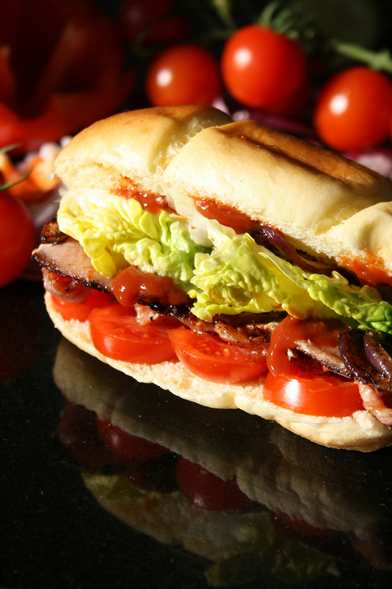

Italian Beef Sandwiches

Description
A wonderful Italian beef recipe cooked in the oven. Lorriane Pierce was a
master cook. Whenever these were on the menu, lines would form.
Serve on crusty Italian bread.
Ingredients
- 4 pounds boneless rump roast
- 6 cloves garlic, slivered
- 1 cup water
- 1 tablespoon salt
- 1 tablespoon coarsely ground black pepper
- 1 tablespoon crushed red pepper
- 1 tablespoon dried oregano
Steps
- Preheat the oven to 250 degrees F (120 degrees C).
-
Make slits in roast with a sharp knife, and insert garlic slivers. Place
roast in a pan not much larger than the roast. Pour water into the pan,
and season roast with salt, black pepper, red pepper, and oregano.
-
Cover, and bake in the preheated oven for 2 hours, basting occasionally.
Remove from oven, and let cool in roasting pan. Meat should be very
rare. Wrap tightly and refrigerate overnight.
-
The next day, remove roast from the pan, and slice as thinly as
possible. Add a little water to the roasting pan, and heat on the
stovetop, but do not boil. Stir to blend seasonings.
-
When au jus is hot, add sliced beef just long enough to heat through.
- Serve on crusty Italian bread with au jus available for dipping.
Home